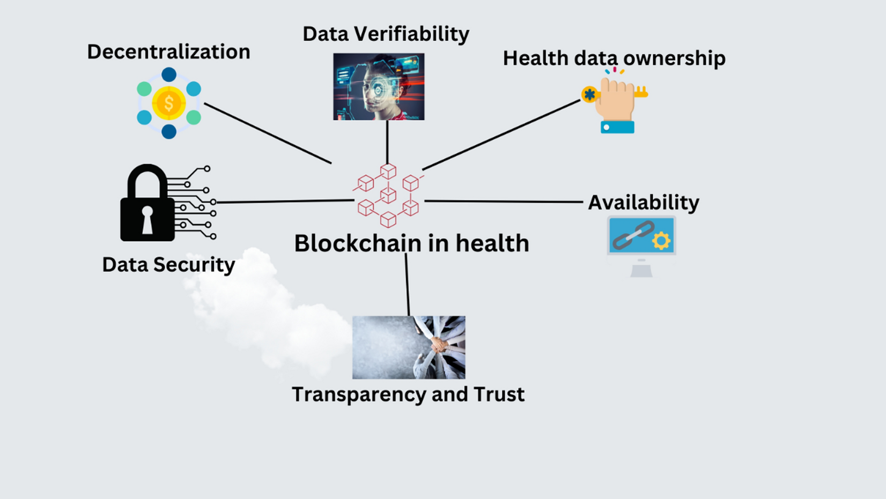

Blockchain Applications in Healthcare Data Security


Blockchain technology, best known as the foundation for cryptocurrencies, holds significant promise for addressing some of healthcare's most persistent data security and interoperability challenges. By creating decentralized, tamper-evident ledgers of health information, blockchain could transform how patient data is stored, shared, and protected.
How Blockchain Works in Healthcare
At its core, blockchain is a distributed database that maintains a continuously growing list of records (blocks) linked and secured using cryptography. Key features relevant to healthcare include:
1. Decentralization
Instead of a central authority, the network collectively validates transactions through consensus mechanisms, reducing single points of failure.
2. Immutability
Once recorded, data cannot be altered retroactively without altering all subsequent blocks, creating a verifiable audit trail.
3. Smart Contracts
Self-executing contracts with terms directly written into code can automate healthcare processes while maintaining compliance.
Key Healthcare Applications
1. Patient Data Management
Blockchain can create unified but secure patient records:
- Patients control access through private keys
- Data remains distributed across providers
- Complete audit trail of who accessed what and when
2. Clinical Trial Data Integrity
Blockchain addresses several clinical research challenges:
- Immutable recording of trial protocols and results
- Preventing selective publication of outcomes
- Ensuring consent compliance across studies
3. Pharmaceutical Supply Chain
From manufacturer to patient, blockchain can:
- Track drug provenance to combat counterfeiting
- Monitor storage conditions (temperature, humidity)
- Streamline recalls and adverse event reporting
"Blockchain in healthcare isn't about cryptocurrency—it's about creating trust in data exchanges across traditionally siloed systems."
Technical Implementation Approaches
Different blockchain architectures suit different healthcare needs:
1. Permissioned vs. Permissionless Blockchains
Healthcare typically uses permissioned (private) blockchains where participants are known and vetted, balancing transparency with privacy requirements.
2. On-Chain vs. Off-Chain Storage
Due to data size, most implementations store only metadata (hashes) on-chain while keeping actual health data in secure off-chain storage.
3. Consensus Mechanisms
Healthcare blockchains often use practical Byzantine fault tolerance (PBFT) or proof-of-authority (PoA) for faster transactions than proof-of-work (PoW).
Real-World Implementations
Several healthcare organizations are already piloting blockchain solutions:
1. MedRec (MIT)
An Ethereum-based system that gives patients a comprehensive view of their medical history across providers while maintaining provider-specific data governance.
2. FHIRChain
Combines HL7's FHIR standard with blockchain to enable secure, standardized health data exchange.
3. European Blockchain Partnership
A cross-border initiative testing blockchain for e-prescriptions and patient summaries across EU member states.
Challenges and Considerations
Despite its promise, blockchain faces several adoption hurdles in healthcare:
- Performance: Current throughput may not scale for high-volume healthcare data
- Regulation: Compliance with HIPAA, GDPR, and other privacy regulations
- Interoperability: Integration with legacy health IT systems
- Energy Consumption: Some consensus mechanisms require substantial computing power
Future Directions
Emerging developments could further enhance healthcare blockchain applications:
- Zero-Knowledge Proofs: Verify data without revealing the data itself
- Sharding: Improves scalability by partitioning the network
- Quantum-Resistant Cryptography: Future-proofing against quantum computing threats
While blockchain isn't a panacea for all healthcare IT challenges, it offers unique solutions to specific problems around data integrity, provenance, and secure sharing. As the technology matures and healthcare organizations gain experience, we're likely to see increasingly sophisticated applications that enhance both security and care coordination.